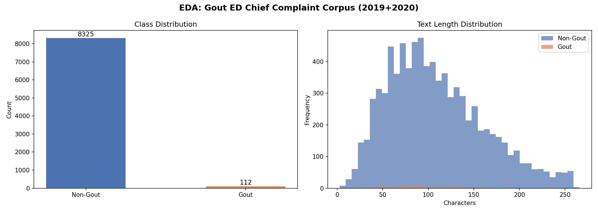
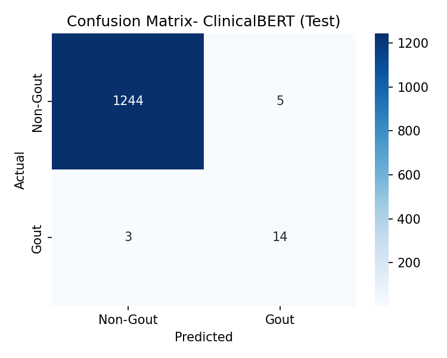
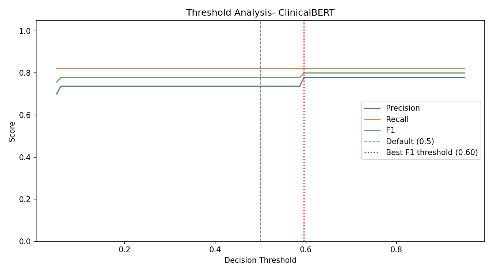

MSK-CHORD · 2026
Identification of genetic biomarkers associated with overall survival across treatment mechanisms of action in metastatic colorectal cancer patients
Genomic biomarkers associated with survival by treatment MoA in metastatic CRC: PIK3CA mutations with chemotherapy in the late period were significantly associated.
About
The MSK-CHORD cohort includes 5,543 colorectal cancer patients. I focused on metastatic colorectal cancer patients.
The primary outcome was overall survival. I included patients who were diagnosed with metastatic colorectal cancer and started a first-line treatment within 30 days of diagnosis. Patients with missing overall survival status, MSI scores, or TMB scores were excluded.
Methods
I fit Cox proportional hazards models with the following covariates: gene of interest, mechanism of action (MoA) group, interaction between gene and MoA, MSI score, TMB, race, sex, and highest stage of cancer recorded. Analysis was performed in R using the survival package.
- Primary outcome: overall survival
- Model: Cox proportional hazards
- Covariates: age, sex, race, stage, MSI score, TMB, gene mutation, MoA, gene × MoA interaction
- Software: R version 4.5.2
Results
This forest plot shows interaction HRs relative to simple chemotherapy. Several gene × MoA interactions reached nominal significance before FDR correction.

PIK3CA mutation nominally shows worse overall survival compared to wildtype across all treatment MoA groups.

MSK-CHORD · 2026
Somatic Polygenic Risk Scoring: A Novel Framework for Metastasis Risk Stratification
sPRS: This proposed method for metastasis risk stratification through weighting of genomic variants in the tumor genomic landscape stratified metastisis risk into low, medium, and high risk by tertile.
About
The MSK-CHORD dataset sequenced 24,950 patients, of which 21,475 unique patients were used after selecting for patients with unique samples, and no missing race data. This method found that sPRS contstruction with regards to metastasis risk is possible and is significanlty associated with metastasis.
Methods
sPRS construction was done using the weights extracted from L1-Regularized Logistic Regression modeling metastasis and genetic variant, age, sex, race, and cancer type.
- Primary outcome: metastasis
- Model: L1-Regularized Logistic regression
- Covariates: genetic variant, age, sex, race, cancer type
- Software: R version 4.5.2
Gout Chief Complaints · 2026
Classification of Gout from Chief Complaints in the Emergency Department: Comparison of Feature-based and Representation Learning Approaches
This project compares two feature-based and three representation learning models for gout classification from chief complaint notes in the ED.
About
The Gout ED Chief Complaint Corpora consists of 300 chief complaint notes from 2019 and 8,037 from 2020, all taken from an academic medical center in the deep south of the US. Two feature-based methods (SVM and Random Forest), and three representation learning-based methods (BERT, ClinicalBERT, and BioMED RoBERTa) were compared.
Methods
SVM and Random Forest (RF) used TF-IDF features to classify gout from chief complaint text. BERT, ClinicalBERT, and BioMED RoBERTa were fine-tuned on the chief complaint corpora.
- Primary outcome: Gout Identification
- Model: Feature-based and Representation Learning Models
- Software:Google Colab
Results
These plots show the heavy class imbalance in this data set. It also shows that gout chief-complaints do not vary in text length compared to other chief complaints.

ClinicalBERT was identified as the best model, with it's confusion matrix shown here.

The optimal threshold was 0.60, compared to the default threshold of 0.50.

Authors
Team
- Medha Rao · MS Health Data Science- University of Michigan · BSPH Biostatistics- University of North Carolina at Chapel Hill